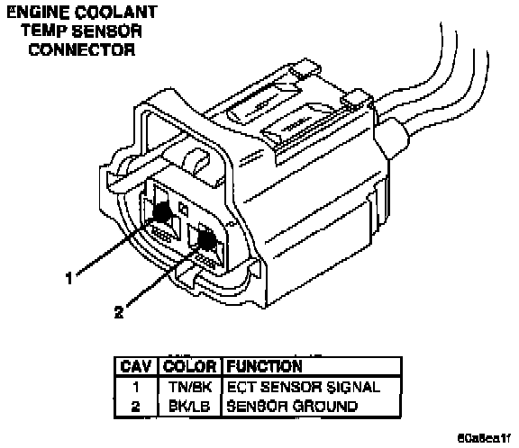

Operation CHARM
: Car repair manuals for everyone.
Русский
Home
>>
Jeep
>>
1997
>>
Grand Cherokee 4WD L6-4.0L VIN S
>>
Repair and Diagnosis
>>
Engine, Cooling and Exhaust
>>
Cooling System
>>
Sensors and Switches - Cooling System
>>
Engine - Coolant Temperature Sensor/Switch
>>
Coolant Temperature Sensor/Switch (For Computer)
>>
Diagrams
Coolant Temperature Sensor/Switch (For Computer): Diagrams
Sensors For ZJ 4.0L.:
